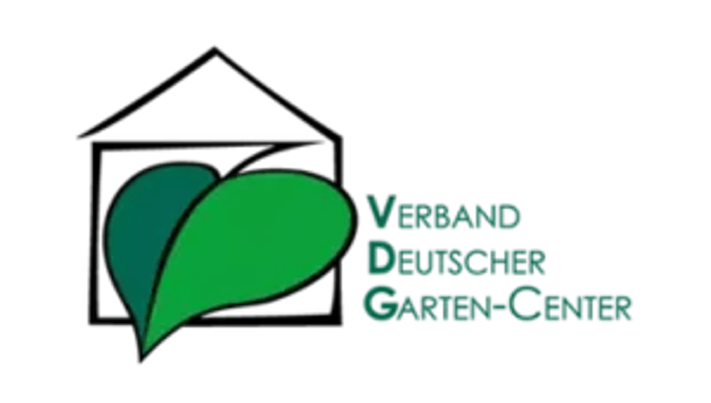

Grün Team GmbH
Baumpflanzung
Social Media Branding für die grüne Branche. Wir machen deinen Betrieb zur Marke – für die richtigen Bewerber und Kunden.

Baumpflanzung
Herbst im Gartencenter
Menschen entscheiden sich für Betriebe, denen sie vertrauen. Eine erkennbare Marke macht deine Qualität sichtbar – als Arbeitgeber und als Partner für neue Projekte.
Echte Menschen. Eine klare Haltung. Inhalte, die deine Qualität immer wieder zeigen.
Fachkräfte erleben, wofür dein Betrieb steht und wie dein Team zusammenarbeitet.
Interessenten lernen deine Arbeit kennen, bevor das erste Gespräch stattfindet.
Dein Betrieb leistet Top-Arbeit – aber online sieht das kaum jemand. Die Konkurrenz ist präsenter.
Stellenanzeigen verpuffen. Du erreichst nicht die Fachkräfte, die wirklich zu dir passen.
Social Media frisst Zeit – und ohne Strategie bleiben die Ergebnisse aus.
Menschen, Projekte und Pflanzenwissen. Entdecke unsere Arbeit für GaLaBau, Baumschulen und Gartencenter.
Baumpflanzung
Herbst im Gartencenter
Die Baumschule
GartenLust
Einblicke ins Projekt
Vom 3D-Modell zum Garten
Blue Balloon
Ein Rundgang
Handwerk & Qualität
Garten mit Pool
Das Pflanzenquiz
Floristik in Bewegung
Heckenschnitt
Pflanzenwissen: Perovskia
Das Pflanzteam
Yves stellt sich vor
Ein Projekt in Essen
Wasser im Garten
Was uns ausmacht
Gehölze roden
Nachhaltigkeit im Handwerk
Ein Garten im Detail
Drei gute Gründe
Frühlingsideen im Korb
Schnelle Fragen an Andreas
Der Balkonkasten
Erfahrung, die wächst
Bäume kommen an
Zusammen als Team
Erfahrung schafft Vertrauen
Hannah stellt sich vor
David stellt sich vor
Partner vor Ort
Das Team dahinter
Nicole stellt sich vor
Ein Strauß für den Herbst
Intermarkt Thielen: Ein Recruitingfilm zeigt den Betrieb und macht Ausbildung greifbar. Auch so wird aus Markenarbeit ein konkreter nächster Schritt für Bewerber.
Recruiting entdecken →Ausbildung im Betrieb · Greenfield Produktion
Acht Kunden. Unterschiedliche Geschichten. Entdecke, wie wir Menschen, Qualität und Unternehmen sichtbar machen.
Grün Team GmbH
Menschen, Maschinen und grüne Projekte: Wir bringen die Arbeit von Grün Team dorthin, wo sie gesehen wird.
Nach 3 Monaten. Aufrufe im Vergleich zum gesamten Vorjahr; individuelle Ergebnisse der vorliegenden Fallstudie.
Baumpflanzung
Heckenschnitt
Schnelle Fragen an Andreas
Originale Kundenproduktionen · Mit Ton öffnen
Die Menschen hinter den Projekten zeigen und die fachliche Stärke des Betriebs verständlich machen.
Baumpflanzung, Team-Einblicke und praktische Tipps werden zu wiedererkennbaren Videoformaten.
Gartencenter Streb
Saisonale Inspiration und Pflanzenwissen geben dem Gartencenter ein Gesicht – mit den Menschen, die jeden Tag beraten.
Ergebnisse der vorliegenden Streb-Fallstudie nach 4 Monaten. Individuelle Kundenergebnisse.
Herbst im Gartencenter
Pflanzenwissen: Perovskia
Der Balkonkasten
Originale Kundenproduktionen · Mit Ton öffnen
Die Vielfalt im Gartencenter greifbar machen und regelmäßig neue Anlässe zum Entdecken schaffen.
Saisonale Reels, konkrete Pflanzentipps und Einblicke ins Gartencenter verbinden Beratung mit Unterhaltung.
Baumschule Huben
GartenLust, Einblicke in die Baumschule und die Menschen im Team: eine Marke mit vielen Geschichten.
Illustrative Beispielzahlen für 3 Monate. Sie zeigen die Gestaltung und werden durch freigegebene Ergebnisse ersetzt.
GartenLust
Yves stellt sich vor
Bäume kommen an
Originale Kundenproduktionen · Mit Ton öffnen
Fachwissen und Menschen zusammenbringen – von der Pflanzenwelt bis zum Arbeitsalltag.
Atmosphärische Event-Reels, persönliche Vorstellungen und echte Arbeitsschritte machen den Betrieb erlebbar.
Scheidtmann GmbH
Baustellen, fertige Anlagen und die Menschen dahinter zeigen, was Scheidtmann ausmacht.
Illustrative Beispielzahlen für 3 Monate. Sie zeigen die Gestaltung und werden durch freigegebene Ergebnisse ersetzt.
Einblicke ins Projekt
Ein Projekt in Essen
Zusammen als Team
Originale Kundenproduktionen · Mit Ton öffnen
Die handwerkliche Qualität und das Miteinander im Team gemeinsam sichtbar machen.
Projektfilme und persönliche Einblicke verbinden Leistung mit Arbeitgebermarke.
Wörlein Baumschulen
Pflanzen brauchen Erfahrung. Gute Geschichten zeigen die Menschen, die sie mitbringen.
Illustrative Beispielzahlen für 3 Monate. Sie zeigen die Gestaltung und werden durch freigegebene Ergebnisse ersetzt.
Die Baumschule
Das Pflanzteam
Erfahrung, die wächst
Originale Kundenproduktionen · Mit Ton öffnen
Die Expertise einer Baumschule über ihre Pflanzen, Arbeitsabläufe und Mitarbeitenden erzählen.
Einblicke ins Pflanzteam, kurze Erklärstücke und Porträts geben fachlicher Qualität eine erkennbare Stimme.
Blumen Metzger
Ein Strauß entsteht. Hände arbeiten. Farben wirken. Floristik erzählt sich besonders gut in Bewegung.
Illustrative Beispielzahlen für 3 Monate. Sie zeigen die Gestaltung und werden durch freigegebene Ergebnisse ersetzt.
Floristik in Bewegung
Frühlingsideen im Korb
Ein Strauß für den Herbst
Originale Kundenproduktionen · Mit Ton öffnen
Kreativität, Sorgfalt und die Menschen hinter den Blumen zum Teil der Marke machen.
Zeitraffer, saisonale Inspiration und echte Einblicke bringen das Handwerk in den Feed.
Gartengestaltung Schwingel
Vom entstehenden Garten bis zum Team: Projekte werden zu Einblicken, die Qualität verständlich machen.
Illustrative Beispielzahlen für 3 Monate. Sie zeigen die Gestaltung und werden durch freigegebene Ergebnisse ersetzt.
Garten mit Pool
Ein Garten im Detail
Das Team dahinter
Originale Kundenproduktionen · Mit Ton öffnen
Die Verbindung von handwerklicher Arbeit, Gartengestaltung und persönlichem Engagement zeigen.
Garten-Reels, Baustellen-Einblicke und Teamformate erzählen den Betrieb aus verschiedenen Blickwinkeln.
Jensen Landschaftsarchitekten
Planung wird verständlich, wenn man die Idee, die Details und die Menschen dahinter kennenlernen kann.
Illustrative Beispielzahlen für 3 Monate. Sie zeigen die Gestaltung und werden durch freigegebene Ergebnisse ersetzt.
Vom 3D-Modell zum Garten
Wasser im Garten
Erfahrung schafft Vertrauen
Originale Kundenproduktionen · Mit Ton öffnen
Den Weg von der ersten Idee bis zur Wirkung eines Gartens nachvollziehbar machen.
Modelle, Gestaltungsideen und persönliche Erklärungen zeigen, wie professionelle Planung entsteht.
Von der klaren Positionierung bis zur laufenden Präsenz: So wächst deine Marke mit uns.
Deine Marke bekommt ein klares Profil.
Wir produzieren dort, wo deine Arbeit entsteht.
Deine Marke bleibt im Kopf – mit System.
Kundenstimmen
Menschen aus der grünen Branche erzählen, was sich durch unsere Zusammenarbeit verändert hat.
Alle Erfolgsgeschichten ↗1 Bauleiter & 2 ausgebildete Landschaftsgärtner eingestellt
Florian Scheidtmann · Geschäftsführer
„Das hat mich brutal überrascht.“
Tobias Stierle · Betriebsleiter
„Greenfield Digital arbeitet äußerst professionell und liefert sehr gute Ergebnisse in kurzer Zeit.“
Carlo Huben & Anna Schick
GALABAU
Ein persönlicher Einblick in die Zusammenarbeit mit Greenfield Digital.
Michael Bleichner · Geschäftsführer
GALABAU
Ein persönlicher Einblick in die Zusammenarbeit mit Greenfield Digital.
Vincent Schmitt · Geschäftsführer
Kundenfilme von Vimeo. Erst beim Abspielen wird eine Verbindung zu Vimeo hergestellt.
Ein eingespieltes Team aus Strategie, Produktion und Performance – spezialisiert auf die grüne Branche.
Planung, Themen und Redaktionsplan – damit dein Content auf klare Ziele einzahlt.
Professionelle Produktion direkt auf deiner Baustelle oder in deinem Betrieb.
Datengetriebene Ausspielung und transparente Reports – wir optimieren laufend.
Lass uns gemeinsam deine Marke sichtbar machen. Im kostenlosen Erstgespräch klären wir deinen Bedarf.

Wir haben alles erhalten und melden uns innerhalb von 48 Stunden persönlich bei dir.
Unsere erfolgreichen Projekte
Lass uns herausfinden, wie dein Betrieb als Marke wächst – und die richtigen Menschen gewinnt.
Kostenloses Gespräch vereinbaren